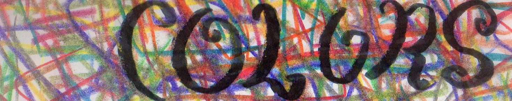

 Inspirational Roadblocks; A Bolt, A Bird? More like A BOLT, A BLOCK!!!!!!!!!!!!!!!!!!HAHAHAHAHAHA Editing the thing has proven to be unnecessarily tedious. My editor has two high-speed external hard drives from which to edit, but they're both full. So he needed one to work from. I managed to get my 'intern' to supply him one. Now it won't turn on. Oh boy, oh boy, oh boy! He was supposed to have something cut together by now. We haven't even started yet, folks.Don't you hate the feeling that you're the only one you can rely on? I'm not saying that's how I feel, but I know this would've gone faster if I'd just done it myself - in fact, I already did, but it's not for you to see. Because it isn't a very good edit. And that's why I'm not doing it myself. In the meantime I'm writing a multimedia theory paper and developing a VERY COOL concept design. To its fruition. It's called the "Ring" - I'll say it's related to what I'm going to mention next and leave it at that for now. Recently I went to a very intimate presentation by the great Ken Perlin - the Academy Award-Winning new media explore-o-naut. Try completing some sort of CGI project without running into his name. Just try. I'm posting that other link again because it's worth letting at least a few of your children starve for a bit longer in order to explore the depths of its crevasses. What was quite startling was the resolve with which he spoke. Apparently in five years we will all be wearing contact lenses that alter our perception. This is an undeniable fact. Google's working on it, Apple's working on it (omg I can't wait for the iEye), hell, maybe even Amazon's working on it. We have to put down our moral hammers and focus on what we can do to make the technology ethical, not try to stop it altogether. Personally, I don't want this shit in my face. Imagine looking up at the Statue of Liberty and all of a sudden stuff comes flying in out of nowhere. I can't take that shit off either, I need glasses to see, and I'm sure it'd take a few minutes to shut down. And after that I probably wouldn't turn them on again. But to each their own. But hey, contacts and glasses modify what we see anyway. I'm already imagining a story where some criminal deceives the police by hacking into their government-issued iEyes and changing their perceptions - swapping doors, buildings, making them drive off cliffs, the works. This would be the first time in history that contacts and glasses would help us "un-see"- while traditional glasses clarify our perceptions, the iEye would do the opposite. Suffice to say I'm trying to maintain a neutral mindset. I suppose at least with my whole vision clouded by digital mirages I'll be a bit less lonely. |
| |
{kind=link}